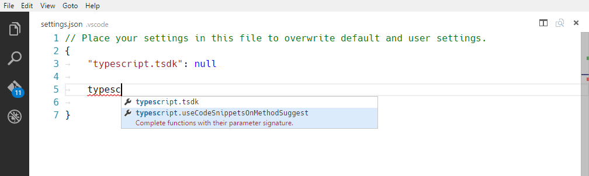
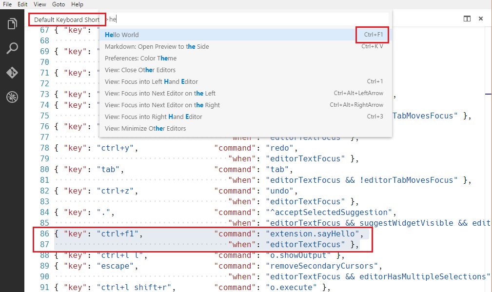
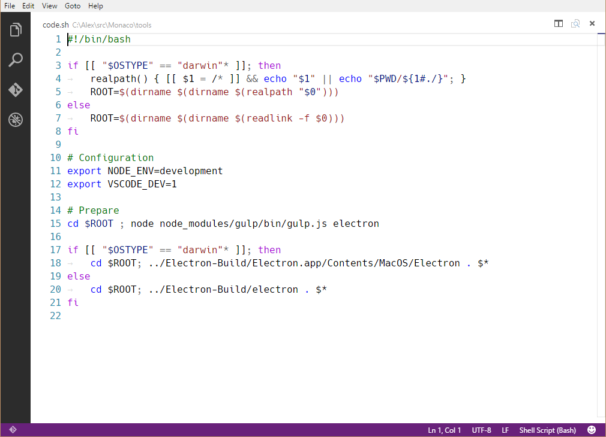

このドキュメントではpackage.jsonで定義する様々なコントリビューションポイントについて説明します。
configurationcommandsmenuskeybindingslanguagesdebuggersbreakpointsgrammarsthemessnippetsjsonValidation
contributes.configuration
ユーザーに公開する設定の構成キーを提供します。これによりユーザーは、ユーザー設定またはワークスペース設定のいずれかで構成オプションを設定できます。
構成キーを提供することで、キーを記述するJSONスキーマを実際に提供します。これにより、設定を構成する際にユーザーは優れたツールサポートを受けるようになります。
あなたはこの値をvscode.workspace.getConfiguration('myExtension')を使用して拡張機能から読み込むことができます。
Example
|

contributes.configurationDefaults
既定の言語固有のエディター構成を提供します。これにより、提供された言語の既定のエディター構成を上書きします。
次の例はmarkdownの既定のエディター設定を提供します:
Example
|
contributes.commands
コマンド パレット(⇧⌘P (Windows, Linux Ctrl+Shift+P))にコマンドを提供します
Note: コマンドが(キーバインドかコマンドパレットから)呼び出されたとき、VS CodeはactivationEvent
onCommand:${command}を発行します。
Example
|

contributes.menus
エディターやエクスプローラーへメニュー項目を提供します。この定義には選択したときに呼びだすコマンドと、項目を表示する条件を含みます。後者は、キー バインドの when clause contextsで使うwhen節で定義されます。必須のcommandプロパティに加えて、代替コマンドはaltプロパティを使って定義できます。これはメニュー項目をホバーしている間にAltを押すと表示して呼び出します。最後にgroupプロパティはメニュー項目のソートとグループ化を定義します。その中でnavigationグループは特別で、常にメニューのトップ(先頭)にソートします。
現在、開発者は次を提供できます:
- コマンドパレット -
commandPalette - エクスプローラーのコンテキスト メニュー -
explorer/context - エディターのコンテキスト メニュー -
editor/context - エディターのタイトル メニュー -
editor/title - エディターのタイトルのコンテキスト メニュー -
editor/title/context - デバッグ コールスタックのコンテキスト メニュー -
debug/callstack/context - The SCM title menu -
scm/title - SCM resource groups menus -
scm/resourceGroup/context - SCM resources menus -
scm/resource/context
Note: コマンドが(コンテキスト)メニューから呼び出されると、VS Codeは現在選択されているリソースを推定しようとして、コマンドを呼び出すときにパラメーターとして渡します。たとえば、エクスプローラー内のメニュー項目は選択したリソースのURLを渡して、エディタ内のメニュー項目ではドキュメントのURLを渡します。
その中でcommandPaletteは全てのコマンドを含んでいるため特殊です。なお、コマンドをその場所にのみ表示するようにするにはwhen節を利用します。タイトルに加えて、コマンドはVS Codeがエディターのメニューバーで表示するアイコンを定義することもできます。
Example
|

Sorting of groups
メニュー項目をグループに分類できます。これらは、以下の既定ルールに沿って辞書式順序でソートします。
エディタのコンテキストメニューには、次のデフォルト値があります:
navigation- 常に最初に表示します。1_modification- 次にきてコードを変更するコマンドを含みます。9_cutcopypaste- 最後にきて基本的な編集コマンドを含みます。

あなたはこのグループでメニュー項目を追加したり、メニュー項目の新しいグループを上下中央のいずれかに追加できます。エディターのコンテキストメニューのみがこのグループ化の制御許されています。
Sorting inside groups
グループ内の順序はタイトルや順序属性(order-attribute)に依存します。次に示すように、メニュー項目のグループローカル順序は@<number>をグループ識別子に追加することで指定します:
|
contributes.keybindings
ユーザーがキーの組み合わせを押したときに呼びだすキー バインドを提供します。キー バインドについて詳しく説明しているKey Bindingsトピックを確認してください。
キー バインドを提供すると、既定のキーボードショートカットと全てのUI表現に追加のキーバインドを表示します。もちろんユーザーがキーの組み合わせを押すば、コマンドを呼び出せます。
Note: VS CodeはWindows、Mac、Linux上で動作します。修飾子が異なる場合には”key”を使用して規定のキー組み合わせを設定し、特定のOS上で上書きしてください。
Note: コマンドが(キーバインドかコマンドパレットから)呼び出されたとき、VS CodeはactivationEvent
onCommand:${command}を発行します。
Example
WindowsとLinuxでCtrl+F1、MacではCmd+F1を定義して"extension.sayHello"をトリガーします。
|

contributes.languages
言語の宣言を提供します。これは新しい言語を導入したり、既にVS Codeにある言語に関する情報を補充します。
これにおいて、言語を基本的にファイルに関連付けられた文字列の識別子で表します。(参照TextDocument.getLanguageId())
VS Codeはファイルに関連付けられている言語を決定するために3つのヒントを使用します。それぞれの「ヒント」を個別に補完できます:
- ファイル名の拡張子(以下
extensions) - ファイル名(以下
filenames) - ファイルの最初の行(以下
firstLine)
ユーザーがファイルを開くと、これらの3つのルールを適用して、言語を決定します。このときVS CodeはactivationEvent onLanguage:${language}を発行します。(下記の例では:onLanguage:python)
aliasesプロパティには他人が言語を識別できる名前を指定します。このリストの最初の項目は、右側のステータスバーに表示する言語ラベルとして選択されます。
configurationプロパティは、言語の構成オプションを含むファイルパスを指定します。パスは拡張機能フォルダーとの相対パスで、通常は./language-configuration.jsonです。このファイルはJSON形式を使用し、次のプロパティを含むことができます:
comments- コメント記号を定義します。blockComment- ブロック コメントをマークする開始と終了のトークンを指定します。’Toggle Block Comment’コマンドによって使用されます。lineComment- 行コメントをマークする開始トークンを指定します。 ‘Add Line Comment’コマンドによって使用されます。
brackets- 括弧の間のインデントに影響する括弧記号を定義します。新しい行を挿入するときに新しいインデントレベルを決定または修正するためにエディターで使用されます。autoClosingPairs- Auto-Close機能の開始と終了の記号を定義します。開始記号を入力すると、エディターは終了記号を挿入します。これは、オプションでnotInパラメーターをとってペアの文字列かコマンドを無効化します。surroundingPairs- 文字列を囲う文字の開始と終了のペアを定義します。
もし言語構成のファイル名がlanguage-configuration.jsonで終わるものであれば、VS Code内で検証と編集ができます。
Example
|
language-configuration.json
|
contributes.debuggers
デバッグ アダプターを提供します。これには次のプロパティがあります:
typeは起動設定でこのデバッガーを識別する固有のIDです。labelはデバッグ アダプターの表示名です。programは実際のデバッガまたはランタイムに対してVS Codeデッグ プロトコルを実装する、デバッグ アダプター プログラムへのパスです。runtimeはデバッグ アダプターのプログラム属性が実行可能ファイルではなく、ランタイムが必要な場合に指定します。configurationAttributesは`launch.json’ を検証するためのJSONスキーマ構成です。initialConfigurationsは初期 ‘launch.json’を生成するための構成です。configurationSnippetsはlaunch.jsonを編集するときにIntelliSenseで新しい構成を追加するためのスニペットを構成します。variablesは置換変数を導入して、デバッガ拡張拡張機能で実装したコマンドにバインドします。
Example
|
debuggerを統合する方法についてはDebuggersを参照してください。
contributes.breakpoints
通常デバッガー拡張機能でブレークポイントも提供します。これにブレークポイントを有効にする任意の言語ファイルタイプを設定します。
|
contributes.grammars
TextMate文法を提供します。あなたは文法を適応するlanguageに文法とファイルパスのためのTextMate scopeNameを提供しなければなりません。
Note: 文法を含むファイルは、JSON(.jsonで終わるファイル名)またはXML plist format (全てファイル)にすることができます。
Example
|
TextMateの.tmLanguageファイルをyo code extension generatorを使用して、簡単にパッケージ化する方法をAdding Language Colorization で参照してください。

contributes.themes
VS CodeにTextMateの配色テーマを提供します。エディターの周囲の色を定義する基本テーマをdarkかlightから選択し、ファイル(XML plist format)へのパスを指定する必要があります。
Example
|
yo code extension generatorを使用してTextMate .tmThemeファイルを簡単に拡張機能へパッケージ化する方法については、Changing the Color Themeを参照してください。
contributes.snippets
|
contributes.jsonValidation
特定jsonファイルにJSONスキーマ構成を提供します。url値には拡張機能内のスキーマへの相対パスか、scheme URLを指定できます。
|
次のステップ
VS Codeの拡張モデルの詳細については次のトピックを試してください:
- Extension Manifest File - VS Code package.json extension manifest file reference
- Activation Events - VS Code activation events reference